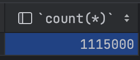

시나리오설정
좌석 정보는 공연의 시간-장소별 좌석들이 개별로 등록된다
A라는 공연에서 B타임에 사용할 좌석 수가 6만개라면 6만개의 row가 쌓이는 것
여러개의 공연을 한다는 가정 하에 좌석정보를 1억건을 등록해본다

이제 Jmeter를 통해 100명이 동시에 좌석을 조회한다는 상황을 만들어 보자
Jmeter 준비
Last modified: 13 2월 2024
좌석 정보는 공연의 시간-장소별 좌석들이 개별로 등록된다
A라는 공연에서 B타임에 사용할 좌석 수가 6만개라면 6만개의 row가 쌓이는 것
여러개의 공연을 한다는 가정 하에 좌석정보를 1억건을 등록해본다
이제 Jmeter를 통해 100명이 동시에 좌석을 조회한다는 상황을 만들어 보자
Jmeter 준비